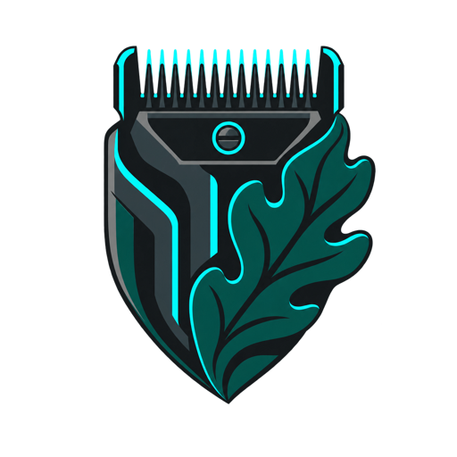
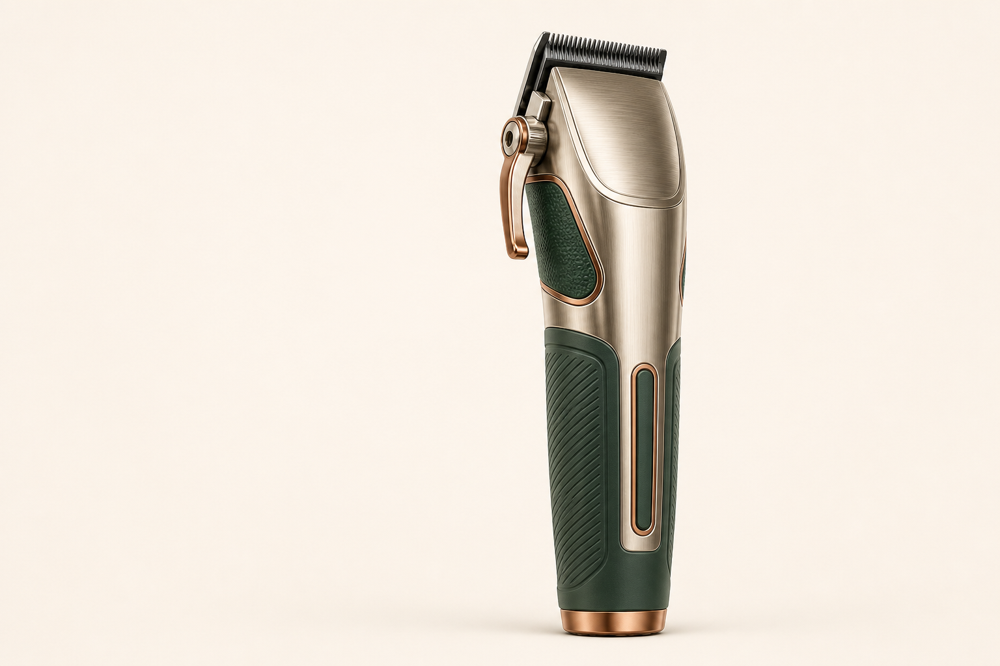
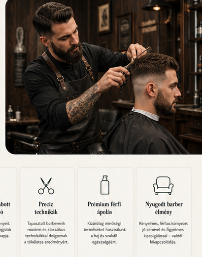
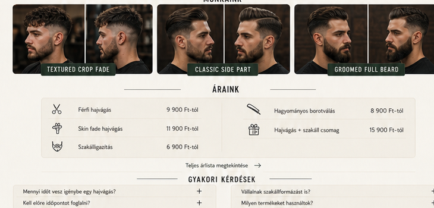
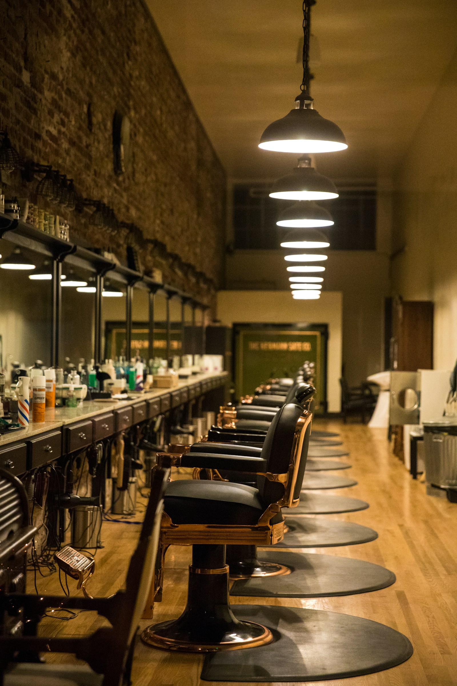

Signature hajvágás
Konzultáció, személyre szabott vágás, mosás, formázás és otthoni styling tanácsadás.
9 900 Ft-tól
IRON & OAKBARBER STUDIO Időpontot foglalokPrémium férfi fodrászat · Budapest
Modern technika, személyre szabott forma és nyugodt barber élmény. Itt minden részlet a karakteredet építi.

PRECISION TOOL00% · összeállításA modern barber új definíciója
Az arcforma, a haj szerkezete és a mindennapi rutinod együtt határozza meg, mi áll igazán jól. A konzultáció nálunk a szolgáltatás része.
01 / Szolgáltatások
Klasszikus alapok, modern technikák és prémium ápolás — pontos időkerettel, meglepetések nélkül.
Konzultáció, személyre szabott vágás, mosás, formázás és otthoni styling tanácsadás.
9 900 Ft-tólTiszta átmenetek, részletgazdag kontúrok és precíz gépi-ollós technika.
11 900 Ft-tólArcformához igazított szakáll, forró törölköző, kontúr és prémium ápoló olaj.
7 900 Ft-tólHajvágás, szakállformázás, borotválás és teljes finishing egy nyugodt sessionben.
17 900 Ft-tól02 / Barber reels
Valódi barber pillanatok. A videók hang nélkül automatikusan indulnak, érintésre megállíthatók.
Barber videók: Pexels stock footage · Gustavo Fring, Pavel Danilyuk, RDNE Stock project
03 / A folyamat
Nyugodt fogadás, ital és rövid ráhangolódás.
Arcforma, hajtípus, rutin és inspiráció egyeztetése.
Precíz vágás, tiszta átmenet és részletmunka.
Formázás, ápolás és személyes styling tippek.
05 / Munkáink



06 / Google értékelések
„Végre egy barber, aki előbb kérdez, aztán vág. Pont ilyen lett, amit elképzeltem.”
Kovács Márk · Google„Tökéletes fade, nyugodt hangulat és nulla kapkodás. Minden alkalommal stabil minőség.”
Nagy Dávid · Google„A szakállam még sosem nézett ki ilyen rendezettnek. Profi csapat, prémium élmény.”
Tóth Bence · Google07 / Csomagok
Konzultáció · mosás · vágás · styling
Foglalok →Teljes haj- és szakállformázás · prémium ápolás
Foglalok →Haj · szakáll · forró törölköző · finishing
Foglalok →08 / Időpontfoglalás
Válassz szolgáltatást, add meg az elérhetőséged, és egy munkanapon belül visszaigazoljuk az időpontot.